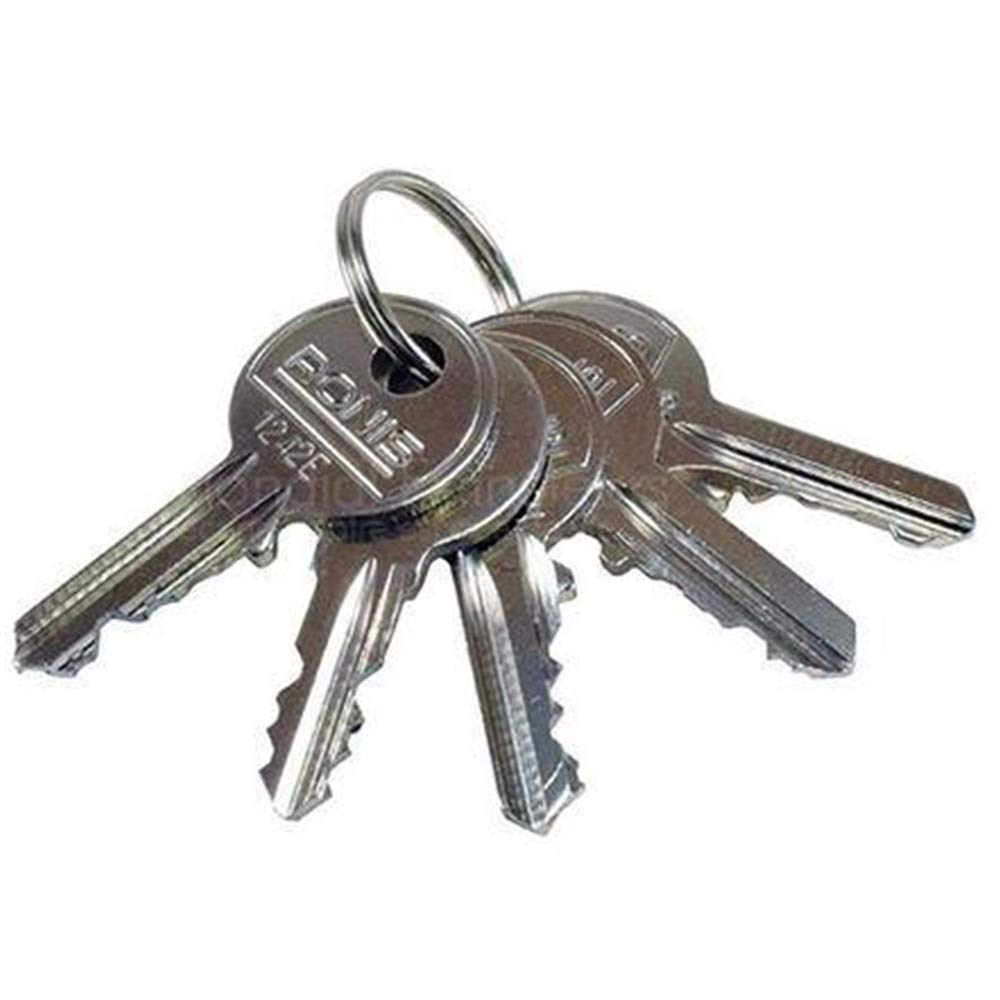
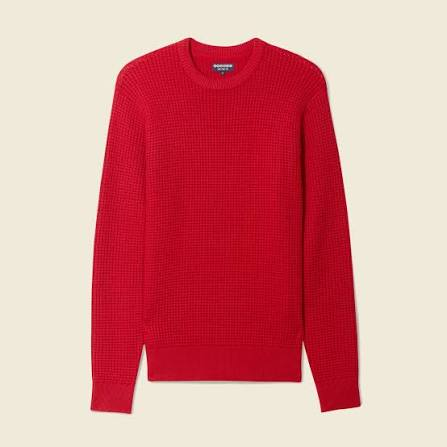
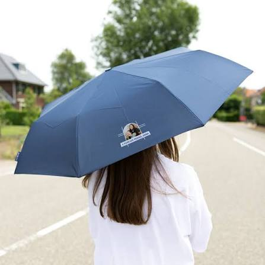

Clés de maison

Statut : Retrouvé
Lieu : Bibliothèque
Date : 28 octobre 2026
Helping students find what they have lost.

Statut : Retrouvé
Lieu : Bibliothèque
Date : 28 octobre 2026

Statut : Perdu
Lieu : Amphi No. 5
Date : 27 octobre 2026

Statut :Retrouvé
Lieu : Sur le banc du jardin du Campus
Date : 26 octobre 2026
| Objet | Statut | Lieu | Date |
|---|---|---|---|
| Clés de maison | Retrouvé | Bibliothèque | 28-10-2026 |
| Pull rouge | Perdu | Amphi No. 5 | 27-10-2026 |
| Parapluie bleu | Retrouvé | Sur le banc du jardin du Campus | 26-10-2026 |
Nos membres actuels sont :
| Fonction | Nom |
|---|---|
| Président | Selma |
| Secrétaire | Hedi |
| Trésorier | Cyrine |
Les objets retrouvés sont conservés 30 jours. Après cette durée, il seront donnés à des associations.
Nous vous informons que nous organisons une collecte géante de vêtements et autres objets utiles le dont nous ferons également don à des associations.
Il est possible de charger une personne tierce à condition qu'elle présente au moment de la restitution une autorisation écrite de votre part ainsi qu'une copie de votre pièce d'identité.
Vous pouvez alors signaler cet objet en utilisant notre formulaire et nous vous contacterons.
Suivez la démo ci-dessous afin de mieux comprendre les étapes de signalement.